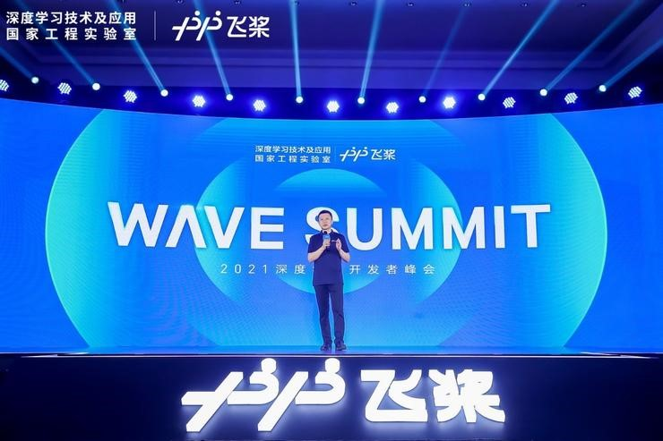

百度飞桨三大全新发布与升级，推动AI工业大生产
5月20日，由深度学习技术及应用国家工程实验室与百度联合主办的WAVE
SUMMIT 2021深度学习开发者峰会在北京召开。
百度首席技术官、深度学习技术及应用国家工程实验室主任王海峰在峰会上致
辞。王海峰透露，飞桨已凝聚320万开发者，相比1年前增长近70%；服务
的企事业单位达到12万家。
王海峰也分享了在现阶段关于人工智能技术和产业发展的两点思考：
一是融合创新。从技术的角度，知识与深度学习相结合，突破了知识增强的深
度语义理解；多技术融合创新，通过知识图谱关联跨模态信息，用自然语言语
义表示融合语言、语音、视觉等不同模态的语义空间，突破跨模态语义理解。
从平台的角度，深度学习平台与芯片软硬一体融合创新，满足不同算力、功
耗、时延等的多样化需求，取得AI应用的最佳效果。飞桨针对多种芯片并存的
环境，研制了异构参数服务器训练技术，突破了超大模型的高效训练难题。目
前，飞桨已经和22家国内外硬件厂商开展适配和联合优化，硬件生态蓬勃发
展。
从产业的角度，人工智能技术越来越深入与产业融合，以产业需求为牵引，持
续打磨AI技术及平台能力，与应用场景融合创新发展。
二是降低门槛，随着人工智能技术在各行业的渗透，面向不同应用场景，高效
满足不同的开发者需求，持续降低门槛非常关键。飞桨是源于产业实践的深度
学习开源开放平台，一直致力于降低门槛，既有支持动静统一的核心框架，也
有产业级模型库、开发套件和工具组件，以及提升企业生产效率的飞桨企业版
等，满足不同行业、不同阶段、不同层次开发者的需要。
基于飞桨平台，320万开发者不再需要从头编写人工智能的算法代码，即可高
效进行技术创新和业务拓展。门槛的大幅降低，加快了人工智能应用的多样化
和规模化，加快了产业智能化进程。

本届峰会上，百度解析了融合创新趋势下的AI工业大生产实现路径，企业在应
用AI过程中，起步于AI先行者探路，在完成模型验证、产生效益后促使企业
组建AI团队，进入AI工作坊应用阶段，当企业内大量研发AI应用，多人多任
务协同展开AI生产时，即进入AI工业大生产。
飞桨团队详细解读了飞桨深度学习平台的全新发布和重要升级，包括：飞桨最
新开源框架，开发更加灵活便捷；大规模图检索引擎，支持万亿边的分布式图
存储与检索；文心ERNIE预训练模型，进一步在知识增强的语义理解、跨模态
语义理解等方面取得突破，为开发者赋能，以及推理部署导航图，助力开发者
打通AI应用的“最后一公里”等等。
同时，飞桨联合学术界和产业界，共同开启飞桨大航海计划，助力AI人才培
养、产业智能化升级和前沿探索。此外，飞桨的合作伙伴分享了应用飞桨的产
业创新实践、人才联合培养计划等。
飞桨持续引领深度学习技术发展和科技融合创新，同时不断降低应用门槛，加
速AI工业大生产，推动产业智能化进程。